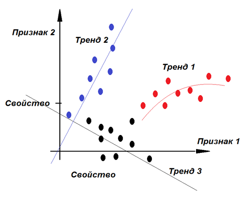
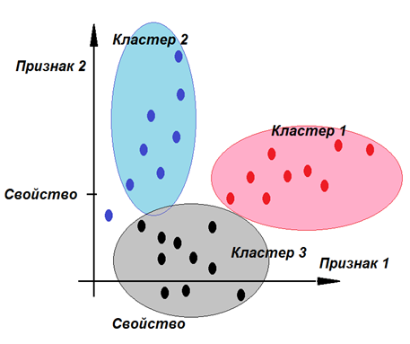
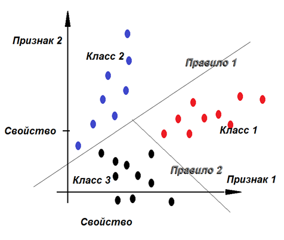
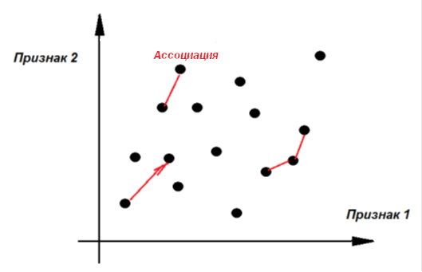
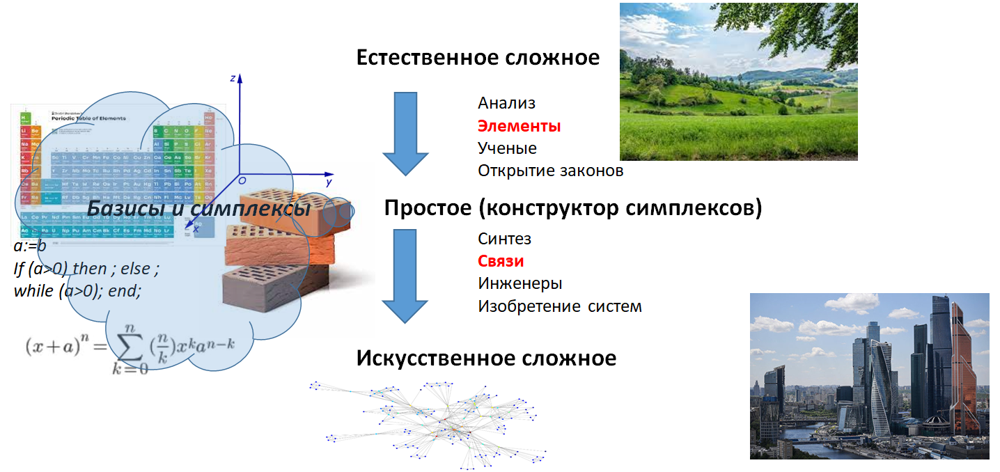
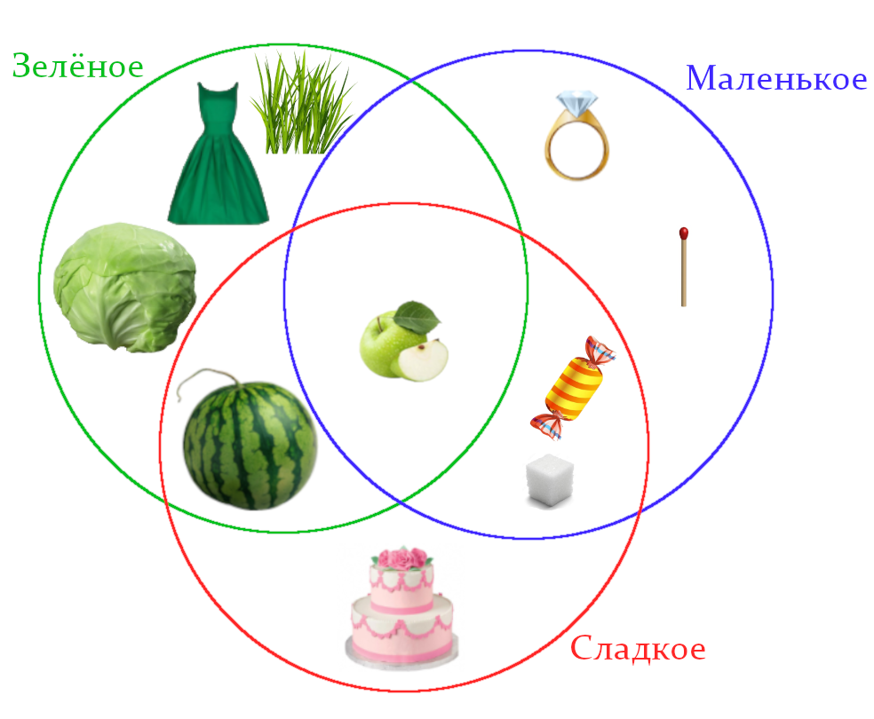

Как мы уже с вами знаем, чтобы понять мир, искусственный интеллект старается на основе экспериментальных фактов установить общие зависимости, в идеале наиболее простые законы. Затем, используя эти элементарные законы, решать задачи для того, чтобы переработать имеющиеся в нашем распоряжении ресурсы в результат, которого нам не хватает, извлечь пользу, обеспечить безопасность, повысить КПД усилий, прилагаемых для достижения результата. В сложных устройствах и системах, создающихся для достижения сложных целей, элементарные законы соединяются в цепочки, образуя сложные зависимости выходных величин от входных. Всё это в итоге предполагает снижение рисков для человека и общества тем или иным путем. Чем точнее выявлен закон, тем точнее принятое на его основе решение, тем меньше риск неудачи или гибели.
ИИ превращает информацию первого типа (данные) в информацию второго типа (модели). При визуализации элементарные понятия предметного мира (признаки) представляются нами как оси координат, а данные (конкретные факты) - как положение точек в этих осях координат, законы – фигуры в пространстве координат (линии, области, множества точек, объединённых некоторой целостностью восприятия, классы, кластеры). Области в пространстве могут снова образовывать и представлять собой ещё более сложные понятия, абстракции.
Для наглядного изображения реальных систем, характеризующихся множеством признаков, используют многомерное пространство. Количество экспериментальных данных - множество точек в многомерном пространстве. Модели представляются областями и их границами в этом пространстве. Наличие сложных связей в системе отображается нелинейностью границ областей.
На сегодняшний день в составе ИИ различают:
- методы построения регрессионных моделей, заменяющих точки (факты, данные) на средние линии, тренды, зависимости, уравнения средних линий областей таких точек (рис.6.1);
- методы кластеризации для выделения областей из точек, более плотных относительно остального пространства, для разбиения данных на кластеры и определения их границ (рис.6.2);
- методы классификации для выяснения базовых понятий мышления, осей координат, отбора признаков, наиболее независимых друг от друга, выявления определений сущностей, явлений (рис.6.3);
- методы выявления ассоциаций для выявления причинно-следственных отношений между фактами, построения цепочек «причины-следствия» (рис.6.4).




Фактически средние линии, области и их границы – это знания, которые ИИ добывает из данных, организуя их, и которыми он пользуется для поиска ответов на вопросы пользователей.
Методы ИИ дают схожие результаты на одних и тех же данных, но разными способами. Широко известные нейронные сети являются также одним из способов выявления моделей и решения задач на них. Разница в методах состоит в предоставляемой ими точности и быстродействии решения задач на больших объёмах данных и сложных зависимостях, содержащихся в них. Геометрический образ модели в пространстве осей координат характеризуется расстояниями, площадями, объёмами, углами образуемых ею фигур.
Как вы знаете, естественный мир чрезвычайно сложен, безграничен и бесконечен. Нам трудно даже представить, сколько законов он таит в себе. Эту естественную сложность ученые пытаются постичь, разбирая сложное на простое, на элементы. Такой процесс называется анализом, результатом которого являются открытия. Элементарное имеет в своей основе простые законы. Например, проще закона, чем А = ВС быть не может. Достаточно убрать хотя бы один знак из этой записи, как закон перестает быть таковым.
Законы не могут возникнуть хаотично. Так как в мире всё взаимосвязано, то законы вынуждены соотноситься друг с другом. И еще, по мере усложнения организации мира законы тоже усложняются. Очень важно представить себе все эти законы в системе. Система начинается с основ, то есть с поиска таких элементарных законов, которые в своей совокупности полны и, одновременно, независимы друг от друга, а сама совокупность и минимальна, и достаточна для описания более сложных систем из нее. Такая система называется базисом.
Ученые ищут базис окружающего нас мира. В отдельных его частях им это уже удалось сделать. Например, система химических элементов Дмитрия Ивановича Менделеева представляет собой атомный базис химии, где признаками являются количество элементарных электрических зарядов в ядре атома (протонов) и пространственное устойчивое распределение зарядов (электронов) на его электронных оболочках. В физике примеры таких систем - электромагнитная теория, молекулярно-кинетическая теория.

Из атомов можно построить кристаллы. Евграф Степанович Фёдоров описал симметрии всего разнообразия кристаллических структур. В математике есть базис Фурье, состоящий из таких тригонометрических функций, которые в минимальном количестве слагаемых могут образовать любую из известных траекторий, образованных сложным вращательным движением. А любое прямолинейное движение можно разложить в сумму ряда функций t, t2, t3, … . В компьютерной графике известен базис Уолша, из набора правильно подобранных двухмерных элементов которого можно построить любую растровую картинку. В программировании известны три элементарные конструкции: присвоение, условный оператор, оператор цикла, из которых строятся остальные сложные программы. Строители могут построить здание любой формы из кирпичей, которые оптимальны по своей форме и размерам. Алфавит, передающий элементарные звуки нашей речи, тоже базис.
Следующим шагом является сборка полученных ранее элементов путем их связывания в сложные системы. Процесс образования сложного из простого принято называть синтезом. На столе инженера можно обычно увидеть проволочки, колёсики, стёклышки, кнопки, шурупы, шарики, шестерёнки. Ничто из этого по-отдельности, например, не летает. Но если правильно связать все это в единую конструкцию, то мы получим систему «самолет» с новым свойством «летать». Система - элементы, связанные между собой, проявляющие в своем единстве новые свойства, не достижимые у каждого из них в отдельности. Инженер изобретает сложные системы, связывая элементы, предоставленные ему учеными, делает искусственное сложное из простого. Цель деятельности инженера - удовлетворить потребности (мечты) общества, увеличить его кпд, усилить способности людей, снизить риски за счет сохранения и развития систем. Задача инженера - регулировать, управлять и организовывать материю.
Поскольку в природе есть всё необходимое, но не в той форме, которая удобна для нас, то инженеры и ученые совместно преобразуют окружающий мир, делая из естественных сложных систем (деревья, горы, реки) искусственные сложные системы (одежда, дома, машины) через операцию разборки-сборки. Учёные разрывают связи для упрощения понимания законов, разбивая мир на элементы, инженеры связывают элементы заново в новых комбинациях для достижения ранее не доступных целей.
Рассмотрим процесс организации материи детально. Давайте сыграем в игру. Я буду называть свойства, то есть имена прилагательные: зелёное, сладкое, маленькое, сочное, … . Уверен, что в вашей голове само собой в этот момент возникло имя существительное - яблоко. Как это произошло?
Сначала после слова «зелёное» можно было представить себе зелёное платье, арбуз, капусту, траву, яблоко. После слова «сладкое» - сахар, конфету, арбуз, торт, яблоко. А так как что-то обладает как первым свойством, так и вторым, то вы сузили область представлений до множества: арбуз и яблоко. Свойство «маленькое» позволило сделать выбор еще точнее: яблоко. Свойства образуют элементы. Элементы - суть пересечение множества свойств. Элементы, сущности, объекты в языке чаще всего выражаются именами существительными, а свойства - именами прилагательными. Чем больше свойств я бы назвал, тем точнее был бы ваш выбор, так как объём множества подходящих предметов сокращался. В тоже время росло содержание представляемого вами понятия, вы представляли себе его все чётче и яснее.
Сформулируем закон – «объем понятия обратно пропорционален содержанию»:
Объем = 1 / Содержание.
Объектов в множестве «зелёные» было 5, значит, объем множества равен 5. Вероятность отыскать наудачу искомый объект из них равна 1 / 5. Содержание множества равно 1 / 5.
Далее. Объем пересечения множеств «зелёные» и «сладкие» равен 2 (арбуз и яблоко). Вероятность взять наудачу один объект из них равна 1 / 2. Содержание множества равно 1 / 2.
И, наконец, объем пересечения множеств «зелёные», и «сладкие», и «маленькие» равен 1. Вероятность взять наудачу объект равна 1 / 1 = 1. Содержание множества равно 1.
Признак - это объединение возможных свойств. То есть цвет - это или зелёный, или красный, или розовый, или синий и так далее. Свойства образуют признаки. Признак - обобщение свойств. (см.рис.6.5) Свойство - это конкретное значение признака.
Математически это можно записать так:
Цвет := зелёный | красный | розовый.
Знак | означает союз «ИЛИ» и называется дизъюнкция.
Яблоко := сочное & зелёное & сладкое & маленькое.
Знак & означает союз «И» и называется конъюнкция.
Здесь мы использовали две из трех основных логических операций: И, ИЛИ, НЕ.

Свойства нам нужны, чтобы уловить различия объектов, признаки - для понимания их сходства.
Так же как свойства образуют признаки, так и элементы образуют классы. Например, Птицы - есть общее название класса, в которое входят журавли, гуси, орлы, синицы. Птица:= орел|гусь|синица. Разумеется, класс — это то, что обладает определёнными признаками и свойствами. Класс - обобщение элементов.
Мы увидели, как в том месте, где имеются подходящие свойства, образовался элемент. Появление в природе однажды некоего объекта (сущности) гарантирует появление аналогичного ему объекта в другое время и в другом месте, так как законы мира едины. Если где-то образовалась из пылевого протооблака планета, то и в другом месте произойдёт тоже самое.
Далее. Поскольку сущность не может претендовать на место, где уже находится другая сущность, то они должны чувствовать друг друга, чтобы сказать «я здесь, это место уже занято». Сущности информируют (чувствуют) друг друга через однородные поля (свойства), проявление которых убывает или нарастает (в разной пропорции у разных полей) с увеличением расстояния от сущности. Эту меру принято называть потенциалом действия поля. Даже у человека есть поля и их потенциалы. Попробуйте незаметно подойти к собаке. По распространяемым вами в пространстве запахам, звукам она обнаружит ваше присутствие на расстоянии. Повесьте в концертном зале на спинку стула свой пиджак и посмотрите, сколько времени стул будет считаться занятым. Действует психологический потенциал.
Возникнув, сущности начинают взаимодействовать друг с другом. Например, планеты притягиваются друг к другу. Мы видим, что сущности порождают связь. Возникшая однажды связь обычно двунаправленна и разнонаправленна. Это означает, что как одна сущность влияет на другую, так и вторая на первую. А также, что сущности могут как притягиваться, так и отталкиваться. Если бы сущности только притягивались, то они рано или поздно все слиплись бы в одну точку пространства. Связь выражается действием, так как связывает причину и следствие. На осуществление действия необходима энергия и время. Примеры известных вам связей: F = ma (причина - сила, следствие - движение тела с ускорением), F = kx, I = U / R. В языке связи чаще всего выражаются глаголами.
Обобщением связей являются отношения. Между элементами множества могут быть, как частный случай, отношения порядка. Например, между натуральными числами имеет место отношение порядка, так как выполняются свойства рефлексивности, антисимметричности и транзитивности. Рефлексивность означает, что между двумя любыми различными элементами множества всегда можно определить a > b ИЛИ a < b. Антисимметричность означает, что ЕСЛИ a >= b И b >= a, ТО a = b. Транзитивность означает, что ЕСЛИ a <= b И b <= c, ТО a <= c.
Итак, на лицо триада «свойства - элементы - связи». Свойства порождают элементы, элементы порождают связи. А элементы, связанные между собой, это система, которая проявляет новые свойства, не присущие ни одному из входящих в неё элементов. Например, две притянувшиеся друг к другу планеты, вращаясь вокруг общего центра масс в планетарной системе, позволяют наблюдать новое свойство «восход второй планеты над горизонтом первой планеты».
То есть в мире после появления систем появляются новые свойства, которые положат начало новой триаде на новом уровне развития материи. Развиваясь, природа усложняет свою организацию: от кварков к элементарным частицам, от элементарных частиц к атомам, от атомов к молекулам, от молекул к кристаллам (мезомир), от кристаллов к планетам, от планет к планетарным системам, от планетарных систем к галактикам, от галактик к метагалактикам, от метагалактик ко Вселенной.
Пример. Самолёты в своем множестве проявляют качественное разнообразие: транспортные, боевые, пассажирские, санитарные, … - это классы. Самолеты в своем количестве проявляют сложность организации: звенья, эскадрильи, отряды, … - это уровни организации.
В каждом слое каждого уровня организации материи есть свой базис. Например, базисом связей (действий) принято считать операции Коллера и обратные к ним (излучение-поглощение, проведение-изолирование, сбор-рассеяние, увеличение-уменьшение и так далее, всего 14 пар).
Там, где зафиксированы знаками базисные свойства, элементы и связи, где определены операции с ними и обратные операции к ним, там возможно решение задач.
Несмотря на то, что в русском языке имеются 7 уровней организации и в каждом уровне определены и обозначены свойства, элементы и связи, а язык - это система, тем не менее языковое изложение сообщения пока не может быть автоматически преобразовано так, чтобы формально вычислить ответ на вопрос к тексту.
Математика - это язык. Но не каждый язык - это математика. Математика прошла долгий и трудный путь к исчислению знаков. Математический способ описания мира опирается на то, что каждому действию сформулировано обратное (сложению - вычитание, умножению - деление, возведению в степень - извлечение корня, синусу - арксинус и так далее), позволяющее выразить в уравнении неизвестное через известные, решить задачу.
Задания
- Приведите 3 примера как из свойств образуются элементы. Как из свойств образуются признаки? Приведите соответствующие математические записи.
- Приведите примеры 4-5 элементарных физических законов. Отметьте в каждом из них причину, следствие и описание условия со стороны среды, необходимого для превращения одного в другое. Найдите законы с операцией умножения и с операцией сложения. Чем по сути эти законы отличаются друг от друга? Когда и почему в законах появляется степень 2,3,4? Когда и в каких законах появляются константы π, е?
- Приведите 3 примера связей между элементами. Поясните, что является причиной, что следствием, а что характеристикой их взаимодействия.
- Продемонстрируйте на трех примерах триаду «свойства - элементы - связи». Продемонстрируйте появление в системах новых свойств. Продемонстрируйте на примерах, как усложняется материя, переходя с одного уровня на другой.
- Приведите примеры из арифметики, алгебры, геометрии уровней организации, в каждом уровне выделите, что является свойством, элементом, связью, признаком, классом, отношением. Приведите примеры обобщений в записи математических конструкций.
- Проследите на исторических записях математических задач, как менялась краткость записи и возможности математического языка. Что дают обыкновенный дроби по сравнению с десятичными?
- Выберите для примера техническое устройство. Нарисуйте его схему. Укажите на схеме его свойства, элементы, операции, связи, законы. Обозначьте на схеме операции Коллера.